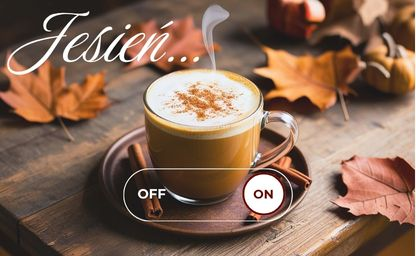

Pracuję w laboratorium i wiem, że dla wielu
z Was wyniki badań to po prostu… skróty,
liczby i mnóstwo niewiadomych.

Jesień ma swój niepowtarzalny klimat. Ciepły koc, wieczór z książką, kolorowe liście za oknem i oczywiście pumpkin spice latte, które nagle pojawia się wszędzie. Trudno się dziwić, bo jest symbolem tej pory roku niemal tak samo jak parasol zapomniany w domu.
Jednak jest coś, o czym jesienią warto pamiętać bardziej niż o dodatkowej porcji syropu dyniowego. To witamina D3.
Latem sprawa jest prosta. Spędzamy więcej czasu na świeżym powietrzu, a promienie słoneczne pomagają organizmowi naturalnie produkować witaminę D.
Jesienią sytuacja wygląda zupełnie inaczej. Dni stają się krótsze, pogoda coraz częściej zachęca do pozostania pod kocem, a kontakt ze słońcem jest znacznie ograniczony. W efekcie organizm może mieć trudności z utrzymaniem prawidłowego poziomu witaminy D.
Witamina D3 pełni wiele ważnych funkcji w organizmie. Wspiera prawidłowe funkcjonowanie układu odpornościowego, pomaga utrzymać zdrowe kości i mięśnie oraz bierze udział w wielu procesach metabolicznych.
Mówiąc bardziej po ludzku: jeśli jesień jest maratonem przeziębień, deszczu i poniedziałkowych poranków, witamina D3 jest jednym z zawodników, którego zdecydowanie warto mieć po swojej stronie.
Oczywiście podobne objawy mogą mieć wiele przyczyn, dlatego najlepszym sposobem na ocenę poziomu witaminy D jest wykonanie odpowiedniego badania laboratoryjnego.
Dobra wiadomość jest taka, że nie trzeba wybierać między przyjemnościami a zdrowiem. Możesz nadal cieszyć się ulubioną jesienną kawą, spacerami pośród kolorowych liści i długimi wieczorami z serialem.
Warto jednak pamiętać, że troska o organizm to nie tylko sezonowe smaki, ale również odpowiednia suplementacja witaminy D3, szczególnie w miesiącach, gdy słońca jest jak na lekarstwo.
Pracuję w laboratorium i wiem, że dla wielu
z Was wyniki badań to po prostu… skróty,
liczby i mnóstwo niewiadomych.
Każde pytanie jest ważne. Jeśli czegoś nie jesteś pewien, wyślij wiadomość, a otrzymasz odpowiedź tak szybko, jak to możliwe.